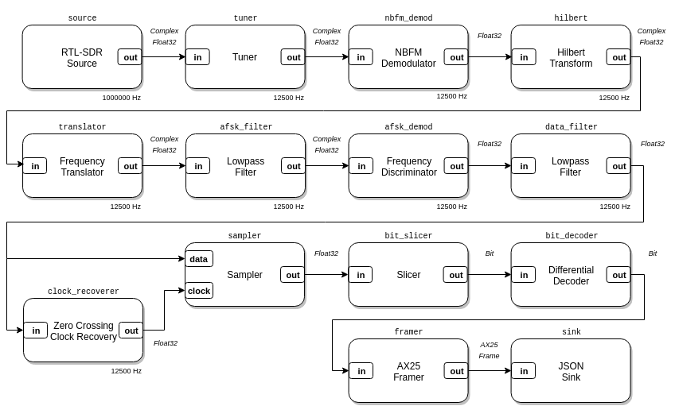

rtlsdr_ax25.luaThis example is an AX.25 packet radio receiver for Narrowband FM, Bell 202 AFSK modulated transmissions on the VHF and UHF bands. It can be used to receive APRS and other AX.25-based data transmissions. It uses the RTL-SDR as an SDR source, writes decoded AX.25 frames in JSON to standard out, and shows two real-time plots: the RF spectrum and the demodulated bitstream.
This AX.25 receiver composition is available in LuaRadio as the
AX25Receiver block.

local radio = require('radio')
if #arg < 1 then
io.stderr:write("Usage: " .. arg[0] .. " <frequency>\n")
os.exit(1)
end
local frequency = tonumber(arg[1])
local tune_offset = -100e3
local baudrate = 1200
-- Blocks
local source = radio.RtlSdrSource(frequency + tune_offset, 1000000)
local tuner = radio.TunerBlock(tune_offset, 12e3, 80)
local nbfm_demod = radio.NBFMDemodulator(3e3, 3e3)
local hilbert = radio.HilbertTransformBlock(129)
local translator = radio.FrequencyTranslatorBlock(-1700)
local afsk_filter = radio.LowpassFilterBlock(128, 750)
local afsk_demod = radio.FrequencyDiscriminatorBlock(1.25)
local data_filter = radio.LowpassFilterBlock(128, baudrate)
local clock_recoverer = radio.ZeroCrossingClockRecoveryBlock(baudrate)
local sampler = radio.SamplerBlock()
local bit_slicer = radio.SlicerBlock()
local bit_decoder = radio.DifferentialDecoderBlock(true)
local framer = radio.AX25FramerBlock()
local sink = radio.JSONSink()
-- Plotting sinks
local plot1 = radio.GnuplotSpectrumSink(2048, 'RF Spectrum', {yrange = {-120, -60}})
local plot2 = radio.GnuplotPlotSink(2048, 'Demodulated Bitstream', {yrange = {-0.15, 0.15}})
-- Connections
local top = radio.CompositeBlock()
top:connect(source, tuner, nbfm_demod)
top:connect(nbfm_demod, hilbert, translator, afsk_filter, afsk_demod, data_filter, clock_recoverer)
top:connect(data_filter, 'out', sampler, 'data')
top:connect(clock_recoverer, 'out', sampler, 'clock')
top:connect(sampler, bit_slicer, bit_decoder, framer, sink)
if os.getenv('DISPLAY') then
top:connect(tuner, plot1)
top:connect(data_filter, plot2)
end
top:run()
Usage: examples/rtlsdr_ax25.lua <frequency>
Running this example in a headless environment will inhibit plotting.
Receive APRS on 144.390 MHz, the North American VHF APRS frequency:
$ ./luaradio examples/rtlsdr_ax25.lua 144.390e6
{"payload":"@030151z3845.28N/12035.52W_000/000g000t054r000p000P000h70b10136/ {UIV32N}\r","control":3,"addresses":[{"ssid":48,"callsign":"APU25N"},{"ssid":112,"callsign":"K6GER "},{"ssid":112,"callsign":"WARD "},{"ssid":115,"callsign":"N6ZX "},{"ssid":112,"callsign":"WIDE2 "}],"pid":240}
{"payload":"`2-1l 5k/'\"3r}GTARC 146.805 & 406.600 both (-) PL 100|)2%n']|!w?;!|3","control":3,"addresses":[{"ssid":48,"callsign":"S8QXXW"},{"ssid":57,"callsign":"KJ6PCW"},{"ssid":115,"callsign":"N6ZX "},{"ssid":112,"callsign":"WIDE1 "},{"ssid":49,"callsign":"WIDE2 "}],"pid":240}
{"payload":"`2-1l 5k/'\"3r}GTARC 146.805 & 406.600 both (-) PL 100|)2%n']|!w?;!|3","control":3,"addresses":[{"ssid":48,"callsign":"S8QXXW"},{"ssid":57,"callsign":"KJ6PCW"},{"ssid":115,"callsign":"N6ZX "},{"ssid":112,"callsign":"WIDE1 "},{"ssid":112,"callsign":"BKELEY"},{"ssid":112,"callsign":"WIDE2 "}],"pid":240}
{"payload":"@094656h3754.16NI12216.92W&(Time 0:00:00)PHG3340/Kensington, CA (I-GATE) */A=000404","control":3,"addresses":[{"ssid":112,"callsign":"APWW10"},{"ssid":53,"callsign":"KC6SSM"},{"ssid":115,"callsign":"N6ZX "},{"ssid":112,"callsign":"WIDE1 "},{"ssid":49,"callsign":"WIDE2 "}],"pid":240}
{"payload":"!3956.16N/12138.86W# 13.6V 62F ","control":3,"addresses":[{"ssid":112,"callsign":"APOT30"},{"ssid":115,"callsign":"W6SCR "},{"ssid":115,"callsign":"N6ZX "},{"ssid":112,"callsign":"WIDE1 "}],"pid":240}
{"payload":"`1N8l#K>/`\"4{}443.575MHz T110 +500_%\r","control":3,"addresses":[{"ssid":48,"callsign":"SWRSYY"},{"ssid":121,"callsign":"KE6STH"},{"ssid":115,"callsign":"N6ZX "},{"ssid":112,"callsign":"WIDE1 "},{"ssid":49,"callsign":"WIDE2 "}],"pid":240}
{"payload":"`1N8l#K>/`\"4{}443.575MHz T110 +500_%\r","control":3,"addresses":[{"ssid":48,"callsign":"SWRSYY"},{"ssid":121,"callsign":"KE6STH"},{"ssid":115,"callsign":"N6ZX "},{"ssid":112,"callsign":"WIDE1 "},{"ssid":112,"callsign":"BKELEY"},{"ssid":112,"callsign":"WIDE2 "}],"pid":240}
{"payload":"@270947z3715.26N/12153.30W#Digi & Igate / ron@k6rpt.com","control":3,"addresses":[{"ssid":48,"callsign":"APMI06"},{"ssid":48,"callsign":"K6RPT "},{"ssid":115,"callsign":"N6ZX "},{"ssid":49,"callsign":"WIDE2 "}],"pid":240}
{"payload":"@270947z3715.26N/12153.30W#Digi & Igate / ron@k6rpt.com","control":3,"addresses":[{"ssid":48,"callsign":"APMI06"},{"ssid":48,"callsign":"K6RPT "},{"ssid":115,"callsign":"N6ZX "},{"ssid":112,"callsign":"BKELEY"},{"ssid":112,"callsign":"WIDE2 "}],"pid":240}
{"payload":"!4001.07N/12122.89W# 12.8V 44F K6FHL Highlakes Fillin W1","control":3,"addresses":[{"ssid":112,"callsign":"APOT30"},{"ssid":112,"callsign":"HILAKE"},{"ssid":115,"callsign":"N6ZX "},{"ssid":112,"callsign":"WIDE2 "}],"pid":240}
...